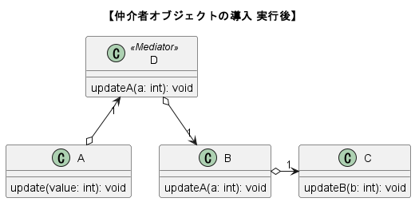
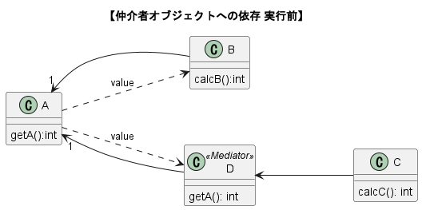

【ビジュアルモデリングツール 操作説明】
ここではビジュアルモデリングツールの操作方法について説明します．ツール課題を行う際に適宜参照しながら作業をすすめてください．
特に，後述するPUSH/PULLの拡張ステージの操作について，操作毎にサンプルのモデルファイル，およびサンプルプログラムのリンクを用意しております．
各操作によってソースコードがどのように変化するかを正確に把握した上で課題に取り組んでください．
操作ができない，描画が正しく行えない等の不具合が発生した場合は一旦ツールを停止させ，もう一度起動して最初から作業を行ってください．
大変お手数をお掛けしますが，ツールはまだ試作段階のものですので，何卒ご理解のほどよろしくお願いいたします．
専用モデルファイル：
ダウンロードリンク：
ソフトウェアの仕様と深くかかわるデータの流れは，専用のアーキテクチャ記述言語（DTRAM）によって記述されます．(実験の範囲を超えるため，ここではDTRAMの説明は省略します．)
ビジュアルモデリングツールではDTRAMによって記述されたモデルファイル(.dtram)を読みこみ，ツール上でモデリング（設計）を行います．
以下のサンプルモデルファイルをお手元にダウンロードしていただき，各操作を練習してください．
- SamplePush.dtram (DL)
- SamplePull.dtram (DL)
モデルファイルの読み込み：
モデルファイルの読み込み手順は以下の通りです．
- ツールを起動後，上部メニューから「ファイル>開く」を選択．
- ポップアップからお手元の「*.dtram」を選択．
- モデルファイル選択後，ツール上にグラフが描画されれば完了です．
モデリングステージ：
今回の実験では
- PUSH/PULLの選択
- PUSH/PULLの拡張
の2つのモデリングステージ上で操作していただきます．
1. PUSH/PULLの選択
概要：
このモデリングステージでは，オブジェクト間のデータ転送方式がPUSH/PULL型のどちらかを選択をしていただきます．
操作方法：
- 図にある赤色の矢印の上にあるプルダウンメニューを選択します．
-
プルダウンから任意のデータ転送方式を選択します．
2. PUSH/PULLの拡張
概要：
このモデリングステージでは，オブジェクト間の呼び出し関係を以下の手順を組み合わせることで変更します．
このモデリングステージの変更によって，元のデータの流れ、データ転送方式を満たす範囲で呼び出しを変更可能にし，
その変更に応じて設計された実行可能なJavaプロトタイプが出力されます．
各種操作毎にサンプルのモデルファイル，およびサンプルプログラムのリンクを用意しておりますので，各種操作によってソースコードがどう変化するかについて，じっくりとご理解を深めていただいた上で課題に取り組んでください．
ただし，本ステージにおける操作状態を保存，及び操作の取り消し等ができないため，一度操作を失敗してしまった場合はもう一度ツールを再起動して再びモデルファイルを読み込んでいただく必要があります．
大変お手数ですが，ご理解のほどよろしくお願いいたします．
操作方法：
-
仲介者オブジェクトの導入：
概要：
オブジェクト間の制御を仲介するだけのオブジェクトを挿入する操作です．
操作手順：
- 仲介オブジェクトを挿入したい呼び出しを右クリックし，
表示されるポップアップメニューから「仲介者オブジェクトの導入」を選択．
-
操作が完了すると下図のようにグラフが変更されます．
コードサンプル：
以下，操作適用前後のサンプルコードのクラス図，及びそのリンクです．
-

-

-
制御の流れの委譲（CFD）：
概要：
ある呼び出しの，呼び出し元オブジェクトを別のオブジェクトに変更する操作．
操作手順：
- 呼び出し元を変更したい呼び出しを左でダブルクリック．
-
選択した呼び出しにおいてCFD(本操作)が適用可能なオブジェクトは緑色，適用不可能なオブジェクトは黒色で表示されます．
-
呼び出し元にしたい緑色のオブジェクトを左でダブルクリックすることで，呼び出し元が変更されます．
コードサンプル：
以下，操作適用前後のサンプルコードのクラス図，及びそのリンクです．
-
-
-
クラス図：

-
シーケンス図：
-
仲介オブジェクトへの依存：
概要：
あるPULL型の呼び出しの，その呼び出し元オブジェクトを仲介者オブジェクトに変更する操作です．
この操作はPULL型のデータ転送を変更する際にのみ実行できる操作で，
PULL型転送によるデータの取得を，仲介者オブジェクトを通して行えるようにする操作です．
操作手順：
-
仲介者オブジェクトの呼び出し先と接続している別の呼び出しの上で右クリックし，ポップアップメニューから「仲介者オブジェクトへの依存」を選択．
-
選択した呼び出しにおいて本操作 (仲介者オブジェクトへの依存) が適用可能な仲介者オブジェクトは緑色，適用不可能なオブジェクトは黒色で表示されます．

-
呼び出し元にしたい緑色のオブジェクトを左でダブルクリックすることで，呼び出し元が変更されます．
コードサンプル：
以下，操作適用前後のサンプルコードのクラス図，及びそのリンクです．
-
-
クラス図：

-
シーケンス図：
-
-
クラス図：
-
シーケンス図：
不具合について：
PUSH/PULLの拡張ステージにおいて，下記の不具合が生じることを確認しています．
不具合が発生した場合は一度ツールを停止させ，もう一度起動して再び１から作業を行ってください．
-
一度PUSH/PULLの拡張ステージで呼び出し関係のモデリング操作を行った状態であるとき，
ナビゲーションウィンドウで，PUSH/PULLの拡張ステージからPUSH/PULLの選択ステージを選択する．
このとき，もう一度PUSH/PULLの拡張ステージを選択すると正しくグラフが描画されない．